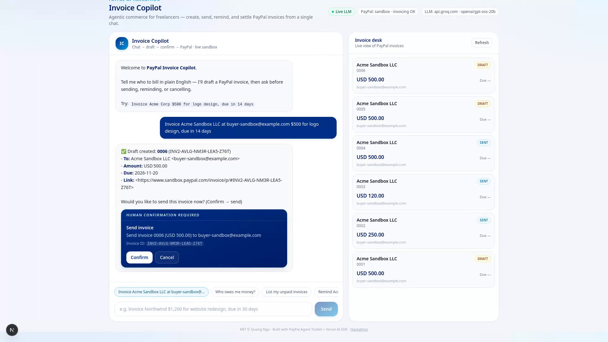

Overview
A chat agent that drafts PayPal invoices from plain English and asks a person before it sends, reminds or cancels. Built for the PayPal AI Hackathon.
What it is
Problem. Freelancers and small businesses turn chat notes like "bill Acme $500 for the logo, due in two weeks" into invoices by hand, in the PayPal web UI.
Who it is for. A solo freelancer or small studio that bills clients through PayPal.
What it does. You type a billing request. The agent creates a draft invoice, shows a confirmation card for send / remind / cancel, keeps an invoice desk (unpaid, collected, drafts) up to date, and can summarise who owes what. It runs with no keys at all (built-in demo agent and in-memory mock store), or with an OpenAI-compatible LLM plus the official @paypal/agent-toolkit against the PayPal sandbox.

docs/media/gallery/).Submission links: source repository · Devpost entry · public demo video (a local copy plays on the Demo script page).
Judge quick path
- Watch the published demo (about 1:53, a PayPal sandbox run with a live LLM; captions in
docs/media/devpost-demo.srt). - Run the zero-key walkthrough: Quick start, then the Demo script. Nothing reaches PayPal or an LLM.
- Inspect the real PayPal integration in
src/lib/paypal-tools.ts(getLiveToolkitTools,getInvoiceTools,executePendingAction), explained on How it works → Real vs simulated. - Read the limits on Security → Known gaps.
Source: README.md, package.json (description), src/components/AppShell.tsx, docs/media/devpost-demo.srt
Status: what is real and what is mocked
Hackathon prototype, version 0.1.0, sandbox-only. Which code runs depends on the environment (src/lib/config.ts):
| Part | No keys (default) | LLM key + PayPal sandbox keys, local launch |
|---|---|---|
| Agent | mock Regex intent parser runDemoAgent | OpenAI-compatible LLM via Vercel AI SDK generateText (max 6 tool steps); Groq openai/gpt-oss-20b by default |
| Create / list invoices | mock In-memory desk with 2 seeded invoices, every row labelled local-mock | PayPal Agent Toolkit on the sandbox when the Invoicing probe passes. A PayPal error is reported as an error: no silent fallback to mock rows |
| Send / remind / cancel | mock Status change in memory after Confirm | Toolkit call after Confirm, chosen by the invoice's provenance (PayPal rows go to PayPal, local rows never do) |
| QR code | mock A graphic labelled PLACEHOLDER (placeholder: true); not a scannable code, in both modes | |
| Storage | Process memory only (globalThis maps); no database, lost on restart, not shared between instances | |
| Hosting | Live credentials are honoured only on a loopback bind (scripts/serve.sh) and are ignored on Vercel/Render, so a public deploy is always the zero-key demo | |
Tests: npm test runs 4 files and 73 tests offline (stubbed PayPal toolkit and a fake LLM model; no network). On 2026-11-07: 73 passed, tsc --noEmit clean, npm run build succeeded.
Limits: no user accounts (a per-browser session cookie only proves which browser proposed an action); state is single-process memory; an action whose PayPal outcome is unknown must be checked in the PayPal sandbox dashboard by hand; summaries add amounts across currencies. Details on Security.
Source: src/lib/config.ts, src/lib/paypal-tools.ts (getInvoiceTools, executePendingAction), src/lib/mock-store.ts, src/lib/pending.ts, scripts/serve.sh, tests/*.test.ts
Architecture
One Next.js 15 app (App Router). The browser calls four API routes, and the routes call shared libraries in src/lib/. Every API request passes a guard (same-origin JSON; loopback only while live credentials are active). With no keys, every write lands in the in-memory store; the PayPal Agent Toolkit is used only when both PayPal keys are set, the server is bound to loopback and the Invoicing probe passes.
- Browser UI (
ChatPanel,ConfirmCard, desk) →POST /api/chat,POST /api/confirm;AppShell→GET /api/invoicesandGET /api/health. /api/chatruns the regex demo agent when no LLM key is set (orFORCE_DEMO_AGENT=true), otherwise an OpenAI-compatible LLM with the invoice tools.- Invoice tools are built per browser session and write to the in-memory store by default; with keys and a passing probe, create and list go to the PayPal Agent Toolkit → PayPal Invoicing v2, always in sandbox (any other
PAYPAL_ENVIRONMENTdisables PayPal). - Send, remind and cancel only record a pending action, owned by the session cookie, valid 15 minutes. No LLM tool can confirm. Only
/api/confirmfrom the same browser runs it, once: PayPal for PayPal-sourced invoices, a status change in memory for local rows.
More diagrams from the same sources: sequence, workflow and invoice lifecycle.
Source: src/components/AppShell.tsx, src/components/ChatPanel.tsx, src/app/api/*/route.ts, src/lib/paypal-tools.ts, src/lib/mock-store.ts. Diagram source: .archify/architecture-invoice-copilot-*/candidate.json (regenerate with Archify finalize).
Pages
Install, environment variables, run, test, verify and troubleshoot.
How it worksOne request from chat to confirmed send, with file and function names.
SecurityTrust boundaries, controls, secrets, and the open gaps.
APIThe four HTTP routes and the tools the agent can call.
Demo scriptWhat to show, in what order, and what to say about the mocked parts.
Work mapEpics → Features → Tasks → Subtasks with status and owner, kept by the agents.
Quick start
Zero-key demo from a fresh clone (commands from README.md and the package.json scripts):
git clone https://github.com/nnquangit/paypal-invoice-copilot.git
cd paypal-invoice-copilot
npm install
npm run dev # open http://localhost:3000Type Invoice Acme Corp $500 for logo design, due in 14 days, press Confirm on the card, and watch the desk. Live PayPal sandbox and LLM settings, tests and troubleshooting are on Setup.
Source: README.md (Quick start), package.json